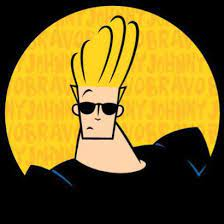
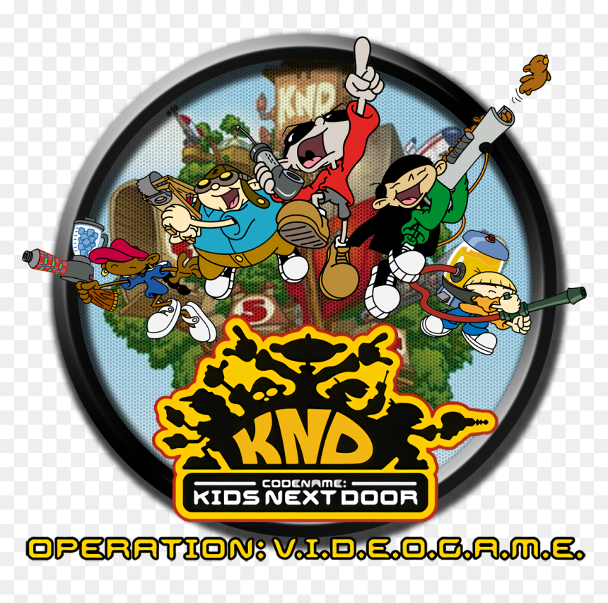
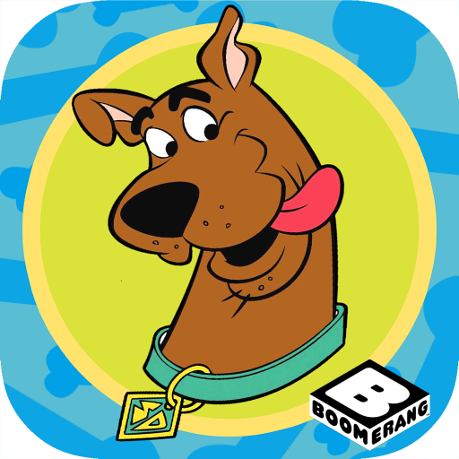
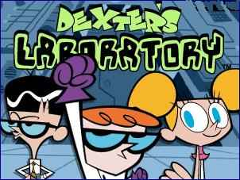
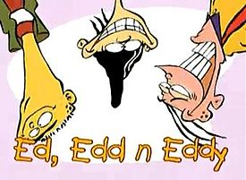
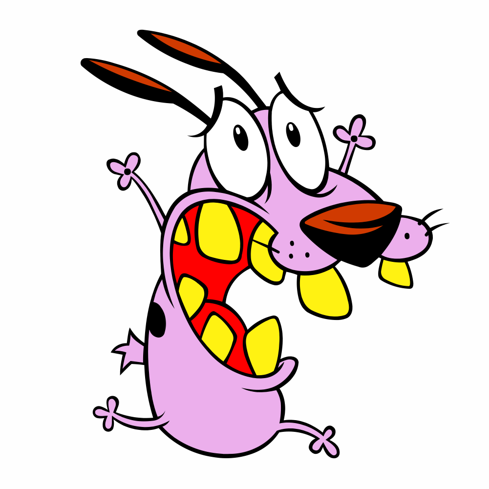
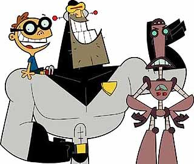
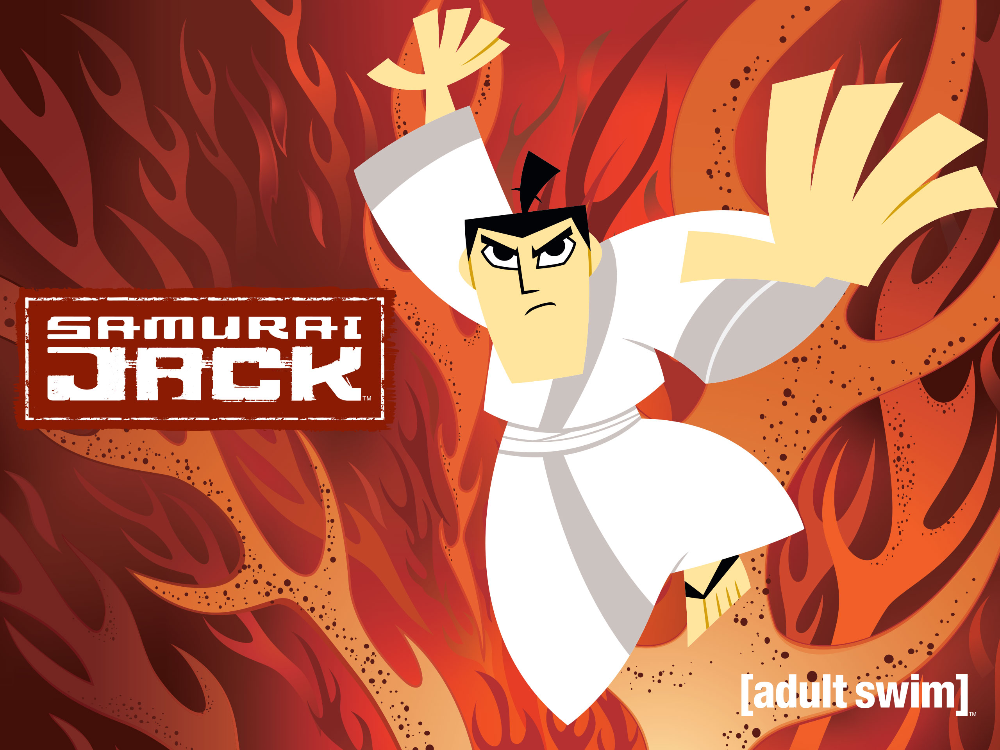
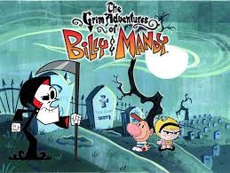
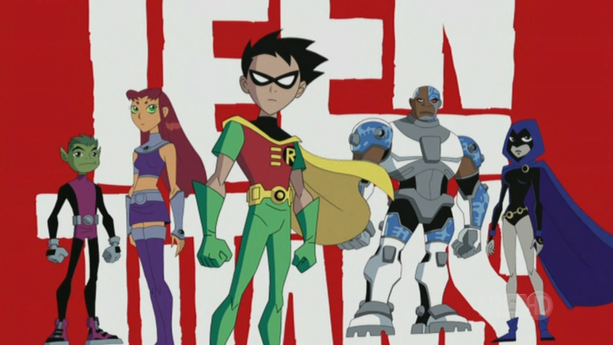

Bakugan
Em um dia comum, estranhas cartas começaram a cair do céu, contendo pequenas esferas que se abrem mostrando suas verdadeiras formas, enormes criaturas chamadas Bakugans

Johnny Bravo
A série gira em torno de Johnny Bravo, um homem de óculos escuros, narcisista, musculoso e autoproclamado conquistador, com um topete e uma voz baseada em Elvis Presley.

Turma do bairro
Cinco crianças se unem para um treinamento tecnológico. O intuito é combater o autoritarismo dos adolescentes e adultos, que impõem regras de alimentação e higiene, por exemplo. Claro que eles também lutam pelo direito de brincar à vontade.

Scooby-Doo
Quatro adolescentes metidos a detetives — Fred, Velma, Daphne e Salsicha — com Scooby-Doo, um Dogue Alemão falante, viajam numa van chamada Máquina de Mistério, e ajudam a investigar casos misteriosos.

O Laboratório de Dexter
Criado por Genndy Tartakovsky, O Laboratório de Dexter acompanha um garoto de cabelos ruivos, esquentado e, apesar de genial, muito azarado. Dentre os percalços para seus experimentos, estão a irmã mais velha Dee Dee (que tem a melhor das intenções, embora muitas vezes ele não perceba) e o arqui-inimigo Mandark, talvez tão inteligente quanto Dexter.

As Meninas Superpoderosas
Açúcar, tempero e tudo o que há de bom: As Meninas Superpoderosas é uma das primeiras produções do CN e uma das mais lembradas até hoje. Florzinha, Docinho e Lindinha são três garotas absurdamente poderosas criadas pelo Professor Utônio. Juntas, elas defendem Townsville de vilões excêntricos como Macaco Louco e Ele.

Du, Dudu e Edu
Du, Dudu e Edu traz o dia a dia de três amigos chamados Eduardo (Edward, em inglês) que vivem em busca de trocados para comprar as balas de caramelo. A série durou 10 anos e, nesse tempo, foram produzidos mais de 100 episódios. Das animações antigas do Cartoon, sem dúvidas é uma das mais longevas.

Coragem, o Cão Covarde
Apesar do nome, Coragem é um cão bastante assustadiço, que vive com Muriel e Eustácio Bagge em uma fazenda localizada na fictícia cidade de Lugar Nenhum, no Kansas. Apesar de "covarde", é o pequeno cãozinho rosa que salva seus donos de ameaças como alienígenas, demônios e zumbis.

Esquadrão do Tempo
Lembra deste? Se a resposta for não, é porque Esquadrão do Tempo não ficou tão popular quanto outros desenhos do Cartoon Network e teve apenas duas temporadas. Na trama, o trio composto por Brito Abelardo, Larry e Otto Lino fazem parte de um esquadrão cujo principal objetivo é manter a história intacta -- a série, aliás, se passa 100 milhões de anos no futuro.

Samurai Jack
Mais uma série criada por Genndy Tartakovsky, Samurai Jack mostra o samurai que dá nome ao desenho sendo lançado para um futuro distópico dominado pelo mestre das trevas Abu em que "o mal é lei". Com a ajuda de uma katana mágica, o herói passa a viver seus dias com o único objetivo de retornar ao passado para evitar os acontecimentos trágicos.

As Terríveis Aventuras de Billy e Mandy
Billy é um rapaz tímido; Mandy, debochada e gótica. Juntas, as crianças ganham um ceifador que os servirá eternamente, fruto de uma uma partida de limbo secretamente trapaceada. Graças aos poderes de Puro Osso, os garotos se aventuram em ambientes sobrenaturais enquanto o ceifador sinistro vive uma relação de amor e ódio com a dupla.

Os Jovens Titãs
Se George Perez e Marv Wolfman popularizaram os Novos Titãs nos quadrinhos na década de 1980, Os Jovens Titãs recolocou a equipe de ajudantes mirins de super-heróis da DC liderada por Robin em voga novamente. Além do garoto-prodígio, o grupo é composto por Mutano, Ciborgue, Ravena e Estelar, sendo o Exterminador o grande vilão.